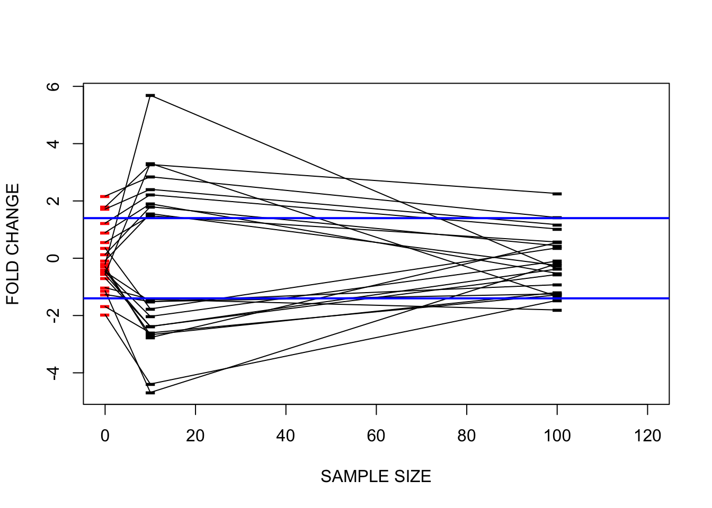
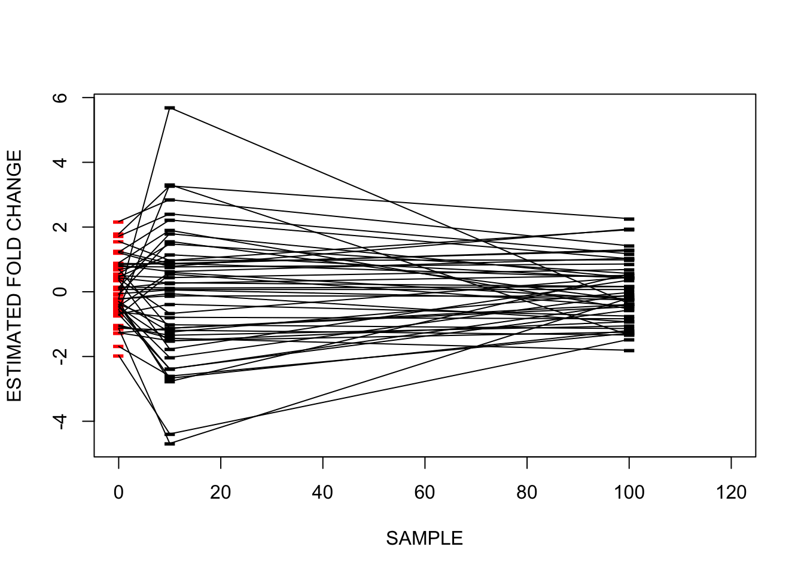
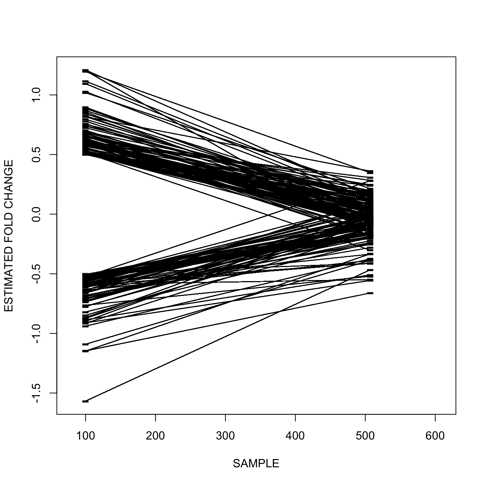
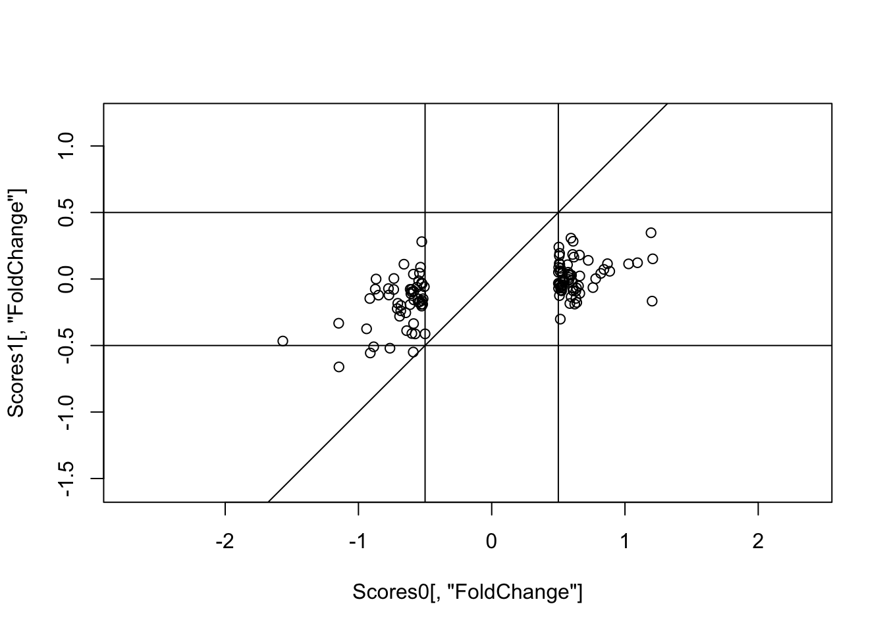
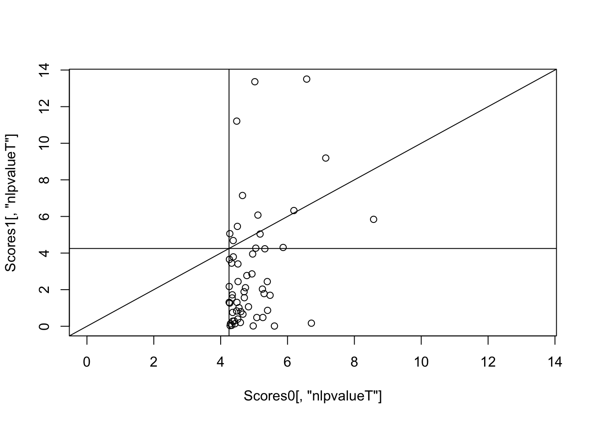

library(curatedOvarianData)
library(ROCR)
data(TCGA_eset)
XX = as.matrix(cbind(exprs(TCGA_eset)))
YY = 1 * as.vector(pData(TCGA_eset)[,"debulking"]=="optimal")
XX = XX[,!is.na(YY)];
YY = YY[!is.na(YY)]
XXX = XX
YYY = YY
# subset
subs = 1:100
XX = XX[,subs]; YY = YY[subs]Lecture 11: Regression to the Mean
Intro
Regression to the mean refers to the tendency of units selected based on performance in noisy criteria to revert back towards the center of the distribution of performance in replication experiments, or over time.
In this lecture we build some intuition based on a simple simulation and then explore regression to the mean in TCGA data. The goal is to motivate methods, like multilevel models, that can help you anticipate and predict the effects of regression to the mean on the practical performance of biomarkers selected through a discovery process.
Data
Continuous genomic feature: gene expression microarray readout in the TCGA study
Binary phenotype (optimal surgical debulking)
As before, we create two sets of summary scores. ScoresSub yields the four metrics computed on the first 100 patients, while ScoresAll gives the four metrics computed on the entire set of patients.
source("RScripts/Scores.R")
ScoresSub = CompScores(XX,YY)
ScoresAll = CompScores(XXX,YYY)We also recreate the permutation distribution of the scores.
set.seed(1)
YYNull = YY[ sample(1:length(YY)) ]
ScoresSubNull = CompScores(XX,YYNull)
set.seed(1)
YYYNull = YYY[ sample(1:length(YYY)) ]
ScoresAllNull = CompScores(XXX,YYYNull)Motivation
Before looking at regression to the mean, let’s first consider some simple exploration of the TCGA data. I picked a cutoff on the AUC and applied it to both the subsample and the full sample. Then I cross-tabulated discoveries. I did that with both the real data and the data after permutation of the obtimal debulking label.
acut = .59
aucDiscSub = ScoresSub[,"AUC"]>acut
aucDiscSubNull= ScoresSubNull[,"AUC"]>acut
aucDiscAll = ScoresAll[,"AUC"]>acut
aucDiscAllNull = ScoresAllNull[,"AUC"]>acut
table(aucDiscSub,aucDiscAll) aucDiscAll
aucDiscSub FALSE TRUE
FALSE 9854 51
TRUE 3167 32table(aucDiscSubNull)aucDiscSubNull
FALSE TRUE
9344 3760 table(aucDiscAllNull)aucDiscAllNull
FALSE TRUE
13099 5
Note
What can we learn from the null distribution?
Simulated Example
Simulated example of the regression to the mean phenomenon. Here for simplicity I bypass the two group setting and just model a single group. The lessons in this example translate almost directly to making inferences on fold change. Fold change is defined over two groups. The analogy is between the means in this simulation and the mean difference in the two group case. The caveat is that the sample size does translate directly from one scenario to the other (the TCGA data are not paired), but the general behavior of the estimates as sample size(s) increase remains the same.
N1 = 10
N2 = 100
NG = 50
set.seed(127)
TrueNoise = rexp(NG,1/5)
set.seed(123)
TrueMeans = rnorm(NG,0,1)
set.seed(124)
Means1 = rnorm(NG,TrueMeans,TrueNoise*sqrt(1/N1))
set.seed(125)
Means2 = ( N1*Means1 + (N2-N1) *
rnorm(NG,TrueMeans,TrueNoise*sqrt(1/(N2-N1))) ) / N2In this simulation, I introduce two sources of variation: variation in the gene-level parametrs (TrueMeans and TrueNoise) and sampling variation. As you go through the results try to tease out the roles of these two sources of variation. Figuring it out on your own is the best strategy. This is a good read if you are stuck @Barnett2004ije
Selecting biomarkers based on fold change after 10 and 100 observations
cutoff = 1.4
TrueDiscoveries = abs(TrueMeans) > cutoff
Discoveries1 = abs(Means1) > cutoff
Discoveries2 = abs(Means2) > cutoff
ND = sum(Discoveries1)Cross-tabulating result, with gold standard
table(Discoveries1,Discoveries2,TrueDiscoveries), , TrueDiscoveries = FALSE
Discoveries2
Discoveries1 FALSE TRUE
FALSE 26 1
TRUE 16 1
, , TrueDiscoveries = TRUE
Discoveries2
Discoveries1 FALSE TRUE
FALSE 0 1
TRUE 2 3plot(c(0,N2*1.2),range(Means1),type="n",
xlab="SAMPLE SIZE",ylab="FOLD CHANGE")
points(rep(0,ND),TrueMeans[Discoveries1=="TRUE"],pch="-",cex=2,col="red")
points(rep(N1,ND),Means1[Discoveries1=="TRUE"],pch="-",cex=2)
points(rep(N2,ND),Means2[Discoveries1=="TRUE"],pch="-",cex=2)
segments(rep(0,ND),TrueMeans[Discoveries1=="TRUE"],
rep(N1,ND),Means1[Discoveries1=="TRUE"])
segments(rep(N1,ND),Means1[Discoveries1=="TRUE"],
rep(N2,ND),Means2[Discoveries1=="TRUE"])
abline(h=cutoff,col="blue",lwd=2)
abline(h=-cutoff,col="blue",lwd=2)
plot(c(0,N2*1.2),range(Means1),type="n",
xlab="SAMPLE",ylab="ESTIMATED FOLD CHANGE")
points(rep(0,NG),TrueMeans,pch="-",cex=2, col = "red")
points(rep(N1,NG),Means1,pch="-",cex=2)
points(rep(N2,NG),Means2,pch="-",cex=2)
segments(rep(0,NG),TrueMeans,rep(N1,NG),Means1)
segments(rep(N1,NG),Means1,rep(N2,NG),Means2)
Regression to the mean in the TCGA data
pcut = 4.25
acut = .66
fcut = .5
allTrue = abs(ScoresSub[,"FoldChange"])>fcut &
ScoresSub[,"nlpvalueT"]>pcut & ScoresSub[,"AUC"]>acut
aucOnly = abs(ScoresSub[,"FoldChange"])<fcut &
ScoresSub[,"nlpvalueT"]<pcut & ScoresSub[,"AUC"]>acut
pOnly = abs(ScoresSub[,"FoldChange"])<fcut &
ScoresSub[,"nlpvalueT"]>pcut & ScoresSub[,"AUC"]<acut
fcOnly = abs(ScoresSub[,"FoldChange"])>fcut &
ScoresSub[,"nlpvalueT"]<pcut & ScoresSub[,"AUC"]<acut
fcDisc = abs(ScoresSub[,"FoldChange"])>fcutN1 = 100
N2 = length(YYY)
NG = nrow(XXX)
NDfc = sum(fcDisc)
plot(c(N1*.8,N2*1.2),range(ScoresSub[,"FoldChange"]),
type="n",xlab="SAMPLE",ylab="ESTIMATED FOLD CHANGE")
title("")
points(rep(N1,NDfc),ScoresSub[fcDisc,"FoldChange"],
pch="-",cex=2)
points(rep(N2,NDfc),ScoresAll[fcDisc,"FoldChange"],
pch="-",cex=2)
segments(rep(N1,NDfc),ScoresSub[fcDisc,"FoldChange"],
rep(N2,NG),ScoresAll[fcDisc,"FoldChange"])
Note
You are the advisor to an investor who is considering funding a company that collected data on 100 samples. The company is proposing to commercialize a marker whose fold change is greater than 1, emphasizing the clinical implication of such a large difference. You have seen data like this figure before. How do you explain to the investor what is likely to happen and why?
Scatterplot version of the same data, to emphasize “shrinkage”.
Scores0 = ScoresSub[fcOnly,]
Scores1 = CompScores(XXX[fcOnly,],YYY)
plot(Scores0[,"FoldChange"],Scores1[,"FoldChange"],
asp=1,ylim=range(Scores0[,"FoldChange"]))
abline(h=fcut); abline(h=-fcut); abline(v=fcut)
abline(v=-fcut); abline(0,1)
Let’s now look at the p-value counterpart of this figure.
Scores0 = ScoresSub[pOnly,]
Scores1 = CompScores(XXX[pOnly,],YYY)
#par(pty="s")
plot(Scores0[,"nlpvalueT"],Scores1[,"nlpvalueT"],
xlim=c(min(Scores1[,"nlpvalueT"]),max(Scores1[,"nlpvalueT"])))
abline(v=pcut); abline(h=pcut); abline(0,1)
Note
- compare and contrast the effect a bigger sample the means to the effect on the negative log p-values